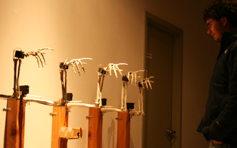
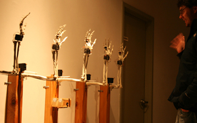
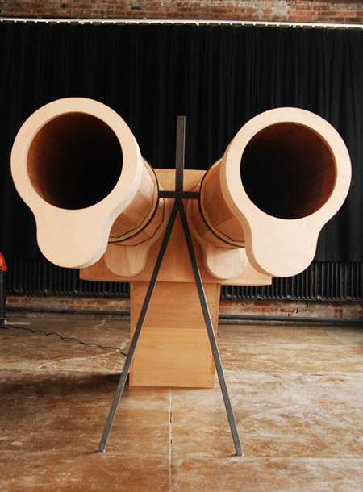
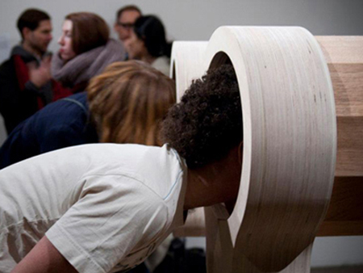
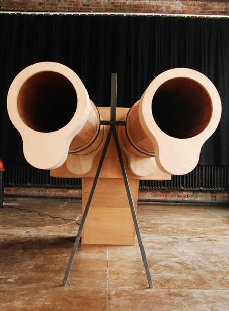
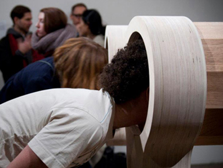
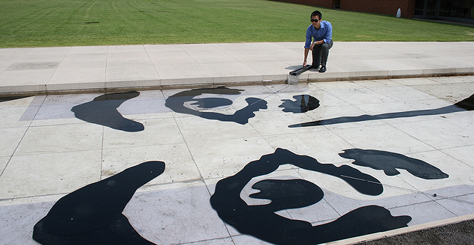
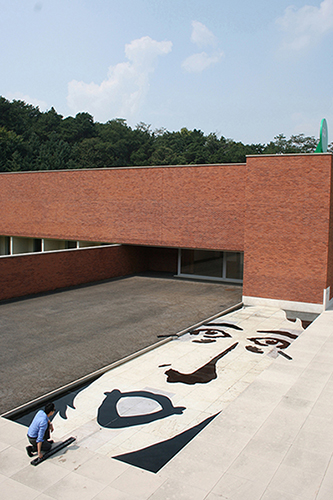
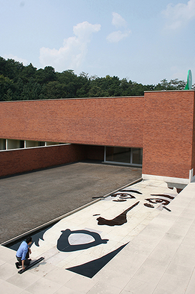

Hye Yeon Nam
Work Samples
List
Audio/Video
1. Self-Portrait (2006, 2014)
2. Wonderland (2008)
3. Cheeeeese (2014)
Visual 2D
4. Please Smile (2011)
5. Whatever You Say
(2012)
6. Floating Identity (2015)
1. Self-Portrait (2006, 2014)
I explore feeling out-of-place in my installation Self-Portrait, which consists of four video projections sited in a hallway. In each projection I perform simple, everyday tasks, such as eating, drinking, and walking; however, in each situation, I have difficulty completing these tasks. With the first video, the spoon I use to eat a tomato is oddly-shaped and ineffective. With the second, my shoes are too long and prevent me from walking 'correctly.' And in the third, a hole at the bottom of my cup prevents me from drinking all my orange juice without splashing it onto me. In the last video sequence, I try to sit in a lopsided wooden chair. In the videos, I seek to portray the difficulty of living in this 'room' that is America. Self-Portrait is an attempt to literally represent my psychological and bodily displacement as a means of representing the experience of immigration to non-immigrants. Since moving two years ago, I now feel as if I live in a different skin. Many of the simple tasks that seemed inborn to me in Korea are now completely foreign. My body, as a result, feels different. I feel like it occupies both Korea and the United States and my arms and legs feel incredibly elongated, as if I cannot see the end of my body. This space of being neither here in America nor there in Korea is precisely what I try to convey in Self-Portrait. In the video performances, I attempt to show what displacement feels like. Because the displacement one feels from immigrating is difficult and complex to communicate, I decide to demonstrate how one's daily, commonplace behaviors suddenly became unfamiliar. By performing these simple tasks gone awry and recording them on video, I escape from the hardship I have felt in the last couple years and I mentally escape from my struggles.
2. Wonderland (2008)
Space takes on multiple definitions. For me, I understand space as the sum of cultural and social forces that act on me. Through the space, my body feels all changes around me instantly and intimately. When I move from Korea to the United States, my body became a gauge that felt my displacement and recognized not only the conformity inflicted on me in the United States, but it also allowed me to deconstruct the rule from my hometown that I had taken for granted as normal. In my video piece, I attempt to convey the feeling of displacement and conformity by acting of walking. I perform walking forward and other people seem to be walking backward. However, I was walking backward in the real scene and I made it simply reversed. The space of being neither here following correct rule nor there following incorrect rule is precisely what I try to convey in this video.
3. Cheeeeese (2014)
Cheeeeese is a single-channel video performance. It is a close-up of a female performer’s mouth. The performer smiles for a long time showing discomfort and convulsions. The uncomfortable pains get severe toward the end of the video. Cheeeeese conveys society’s pressure of being polite and being nice to others; however, the manner is socially forced, not naturally performed.
4. Please Smile (2011)
Please smile is an exhibit involving five robotic skeleton arms that change their gestures depending on a viewer’s facial expressions. It consists of a microcontroller, a camera, a computer, five external power supplies, and five plastic skeleton arms, each with four motors. It incorporated elements from mechanical engineering, computer vision perception to serve artistic expression with a robot.
Audiences interact with “Please smile” in three different ways.
When no human falls within the view of the camera, the five robotic skeleton arms choose the default position, which is bending their elbows and wrists near the wall. When a human steps within the view of the camera, the arms point at the human and follow his/her movements. Then when someone smiles in front of it, the five arms wave their hands. Through artwork such as “Please smile,” I would like to foster positive audience behaviors.


 
Credit
Hye Yeon Nam (Director)
Changhyun Cho (Robotics Engineer)
5. Whatever You Say
(2012)
The idea of Whatever You Say represents asymmetric power relations using sound; individuals have different hierarchical power to speak. Whatever You Say is a giant wooden gun, which generates a short, uncomfortable, low-frequency sound when anyone stands in front of the work. Whatever You Say,with two barrels, represents the power of spoken words to intimidate others through sound alone.
  
  
Credit
Hye Yeon Nam (Director)
Inmi Lee (Sound Designer)
6. Floating Identity (2015)
Floating Identity is located in the granite pond in the Amore Pacific Sculpture Garden. The water on the granite pond is a metaphor for the fluidity of the modern society, and the image of the woman’s face submerged in the water is a symbol for the socially agreed-upon beauty and identity of the modern woman. The audience changes the facial expression using the manual handles; One handle changes the shape of the mouth and two handles control the angles of each eye and eyebrow respectively. It reveals the variation of the standards of beauty in today’s society.

 
